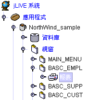
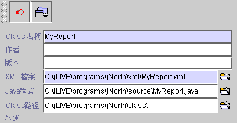
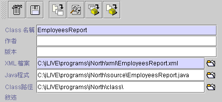
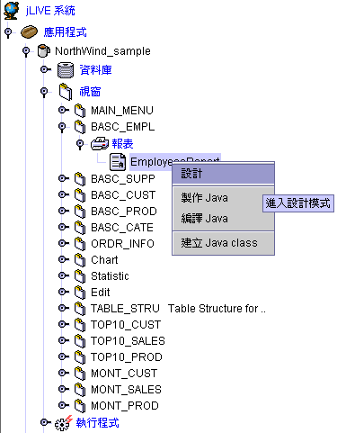

|

7.1 新增報表
(create new report)

請先點選【報表】節點，然後按下右方 新增
 ( 新增報表 ) ，接著會出現設定頁。Class 名稱的預設值是 MyReport ，可以改為你所需要的報表名稱。
( 新增報表 ) ，接著會出現設定頁。Class 名稱的預設值是 MyReport ，可以改為你所需要的報表名稱。


-
取消
 (
取消新增動作 ) (
取消新增動作 )
-
新增
( 新增報表 )
-
刪除
 ( 刪除此報表 ) ( 刪除此報表 )
-
儲存  ( 儲存報表設定 )
( 儲存報表設定 )
-
製作
( 製作
Java™ 程式碼 XML --> Java ) 由 XML 檔產生 Java™ 的原始程式。
-
瀏覽
 ( 瀏覽
Java™ 程式碼 ) 查看所產生的 Java™ 原始程式。 ( 瀏覽
Java™ 程式碼 ) 查看所產生的 Java™ 原始程式。
-
編譯
( 編譯 Java™ Java --> class ) 編譯
compile Java™ 程式。
-
建立
( 建立
class XML --> Java --> class ) 重新從 XML 產生 Java™ 原始程式並編譯成 class。
-
Class 名稱 (class name)：報表名，名稱中不可以含有空白，報表名和編譯後的 class 檔名相同。
-
作者 (author)：作者名。允許空白。
-
版本
(version)：版本別。允許空白。
-
Xml 檔案
(XML)：jLIVE Builder™
記錄報表設計內容的 XML
檔案。
-
Java™
程式
(Java™
source)：Java™ 程式存放的目錄和檔名。
-
Class
路徑
(class path)：class 檔案存放的路徑和檔名。
▲Top
7.2
報表管理 (report arrangement)
jLIVE Builder™
程式控制面版中，報表系統是在視窗 (form) 下的一個分類節點
(node)，設計師可以在視窗下的報表節點，新增多個功能不同的報表。已存在的報表，可以在屬性設定頁上執行報表的編輯、存檔、刪除、編譯等。
-
設計 (design)：進入設計模式。
-
製作 Java™ (make Java™) ：製作
Java™ 原始碼。
-
編譯 Java™ (compile Java™) ：編譯
Java™ 原始碼。
-
建立 Java™ Class (build Java™ class) ：將 Java™
原始程式編譯成 class。

▲Top
Copyright © 2001~
2004 Probe Technology . All Rights Reserved.
Questions, comments,
and suggestions to Service@probe.com.tw
|